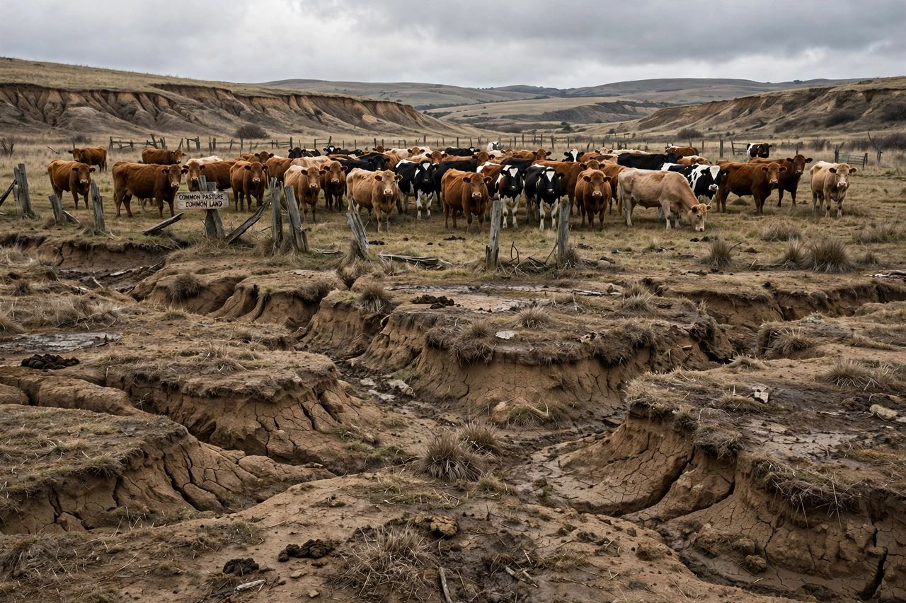

From Wikipedia, the free encyclopedia
| Tragedy of the commons | |
|---|---|
 | |
| Field | Economics; ecology; game theory |
| Popularised by | Garrett Hardin, Science (1968) |
| Anticipated by | William Forster Lloyd (1833) |
The tragedy of the commons is a concept in economics and ecology describing how individuals acting in their own self-interest can deplete a shared resource even when it is in no one's long-term interest for this to happen. It was popularised by ecologist Garrett Hardin's 1968 essay in Science, using the example of herders each adding cattle to a common pasture: each herder gains the full benefit of an extra animal while the cost of overgrazing is spread across all, so the pasture is inevitably destroyed.
"Freedom in a commons brings ruin to all." — Garrett Hardin (1968)
Hardin's own remedies were "mutual coercion, mutually agreed upon" — regulation or privatisation of the commons. Political scientist Elinor Ostrom, in Governing the Commons (1990), documented many real-world cases in which communities sustainably self-govern commons — irrigation systems, fisheries, forests — through monitoring, graduated sanctions and locally devised rules, work for which she received the 2009 Nobel Memorial Prize in Economics. The concept is now routinely applied to overfishing, groundwater depletion, antibiotic resistance, atmospheric carbon emissions and climate change.
Historians note that actual medieval commons were usually stinted and regulated, not open-access free-for-alls, and critics argue the parable conflates common property with no property at all. Hardin's essay was also entangled with his views on population control, which remain controversial.
See also: Elinor Ostrom · Prisoner's dilemma · Externality